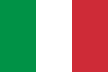

1st - Liverpool: Looking the real deal, and proving it too!
2nd - Arsenal: Still complaining about referees, rather than focusing on their deficiencies.
15th - Tottenham: It could be worse.....but let's hope not!
Spain - La Liga
1st - Real Madrid: Tremendous talent compensating for clear weaknesses.
2nd - Atletico Madrid: Punching above their weight, but also showing unmatched consistency.
3rd - Barcelona: Objectively playing the best football, but not earning the necessary results
Italy - Serie A 
1st - Napoli: Won their first title in 33 years in 2023, only to mount the worst title defense in recent memory in 2024....could Conte make it 2 in 33?
2nd - Inter Milan: Fresh off losing a Supercoppa title to their bitter rivals, it seems they're using it as fuel
3rd - Atalanta: The darkhorse underdogs everyone can root for - faultless intensity and effort
Germany - Bundesliga
1st - Bayern Munich: Back on top after losing the title for the first time in 11 years... can Harry Kane finally break his duck and win a trophy?
2nd - Bayer Leverkusen: Better than most in the league, but are they still burnt out from their Europa League run & undefeated league record from last season?
3rd - Eintracht Frankfurt: They find a new $50+ million striker every year, but this time they sold him in January - can they maintain their European spot without him?
France - Ligue 1
1st - Paris Saint-Germain: A Qatari funded club with BILLIONS more than the rest of the league combined. How surprising
2nd - Marseille: 10 points off the leaders, but a once-great club has returned to relevance...for now
3rd - AS Monaco: One of the best youth academies in the world, but only 4 points above 7th place... can they keep it up in the second half of the season?